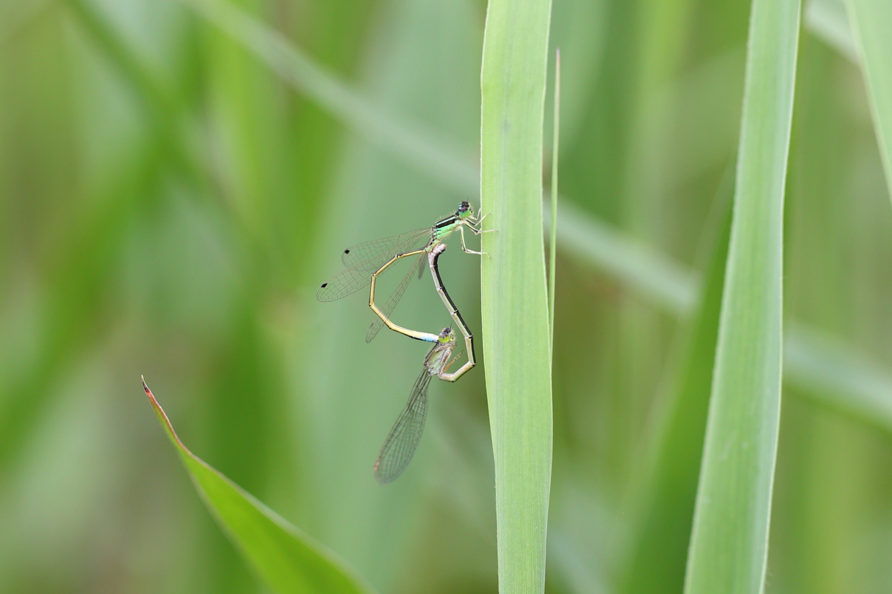

2022年トンボ撮影始動
カメラを買い替えたこともあり，トンボ撮影に行きたいと思っていた．テスト撮影を兼ねて，近所の池を散策．一箇所目のポイントは残念ながら一匹もいなかったので，二箇所目の池に向かう．幸いにも，足元の草むらにアジアイトトンボとクロイトトンボがたくさんいた．まだ未成熟個体が多く，成熟した個体は少なかった．ゴールデンウィークくらいには成熟した個体に変わっているだろうか．

2022年4月24日 クロイトトンボ ♂ 未成熟 埼玉県

2022年4月24日 アジアイトトンボ 埼玉県